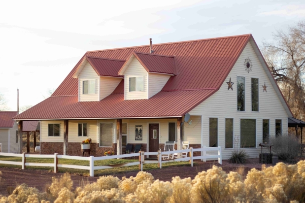

The Journey Behind the Lens
A.T. Johnson is a photographer based in Southern Utah with a deep love for travel and the rugged outdoors. Based near the red rocks of Zion, A.T. seeks out locations and subjects that most people drive past without a second glance. The goal is to find authenticity in every frame, whether it's the dust on a trail-worn truck or the light hitting a mountain peak at dawn.
With over a decade of experience navigating remote terrains, the photography produced here isn't just about the final image. It's about the adventure required to get there.

Areas of Specialty
- Overland & Adventure Vehicle Photography
- High-Desert Landscape Portraits
- Candid Lifestyle Imagery
- Travel Documentation